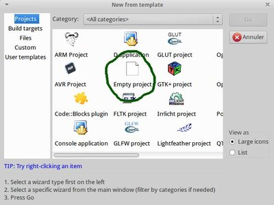
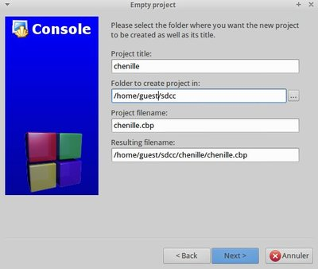
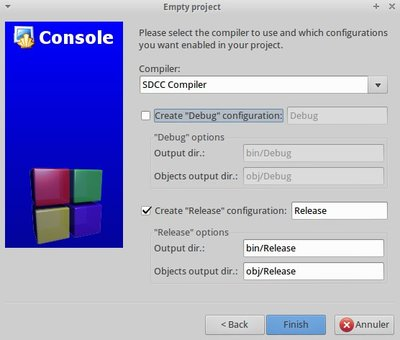
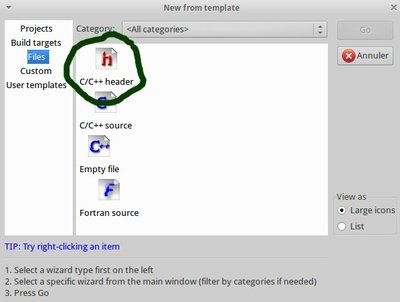
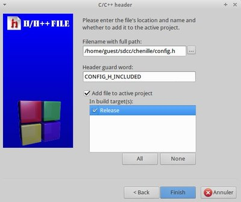

Dans ce projet, nous allons refaire le programme de la chenille (celui qui nous a servi de test pour pk2cmd). Avant de démarrer, il serait intéressant de vous familiariser avec le langage C. Vous trouverez de nombreux tutoriels sur le web
Création d’un nouveau projet
Commencez par lancer Code::Blocks. Initialisez un nouveau projet depuis le menu File→New→Project. Sélectionnez Empty Project

Renseignez maintenant les données du projet comme le montre l’image suivante:

Précisez le profile de compilation
- Le compileur est SDCC
- Décochez le profile debug

Edition des sources
Ca y est, nous avons notre projet vide. Nous allons y mettre deux fichiers:
config.h: la configuration des fusiblesmain.c: le programme principale
config.h
Allez dans le menu File→New→File pour insérer un nouveau fichier dans le projet et prenez un header

Nommez-le config.h et incluez-le dans le profile Release

Copiez le code suivant:
#include <pic18fregs.h>
// Set the __CONFIG words:
__code __at (__CONFIG1L) _conf0 = _PLLDIV_DIVIDE_BY_5__20MHZ_INPUT__1L & _CPUDIV__OSC1_OSC2_SRC___1__96MHZ_PLL_SRC___2__1L & _USBPLL_CLOCK_SRC_FROM_96MHZ_PLL_2_1L;
__code __at (__CONFIG1H) _conf1 = _OSC_HS__HS_PLL__USB_HS_1H;
__code __at (__CONFIG2L) _conf2 = _VREGEN_ON_2L;
__code __at (__CONFIG2H) _conf3 = _WDT_DISABLED_CONTROLLED_2H;
__code __at (__CONFIG3H) _conf4 = _PBADEN_PORTB_4_0__CONFIGURED_AS_DIGITAL_I_O_ON_RESET_3H;
__code __at (__CONFIG4L) _conf5 = _ENHCPU_OFF_4L & _LVP_OFF_4L ;
__code __at (__CONFIG5L) _conf6 = _CP_0_OFF_5L ;
Selon la version de SDCC, il faudra plutôt utiliser le code suivant:
#include <pic18fregs.h>
// Set the __CONFIG words:
__code __at (__CONFIG1L) _conf0 = _PLLDIV_5_1L & _CPUDIV_OSC1_PLL2_1L & _USBDIV_2_1L;
__code __at (__CONFIG1H) _conf1 = _FOSC_HSPLL_HS_1H;
__code __at (__CONFIG2L) _conf2 = _VREGEN_ON_2L;
__code __at (__CONFIG2H) _conf3 = _WDT_OFF_2H;
__code __at (__CONFIG3H) _conf4 = _PBADEN_OFF_3H & _MCLRE_ON_3H;
__code __at (__CONFIG4L) _conf5 = _XINST_OFF_4L & _LVP_OFF_4L & _DEBUG_OFF_4L;
Cette partie permet de configurer le comportement du microcontrolleur (cf datasheet 25.1 Configuration Bits p.286)
- Config 1L: Configuration des oscillateurs
- Config 1H: Configuration de la source d’oscillation
- Config 2L: Régulateur de tension USB (ce n’est pas utilisé dans ce programme, mais ce fichier me sert de configuration de base pour tous mes programmes)
- Config 2H: Watchdog
- Config 3H: Configuration du port B (je n’arrive toujours pas à utiliset le bit B0 en bit de sortie)
- Config 4L: comportement du programme
- Config 5L: Code protection
main.c
De la même façon que précédemment, ajoutez une fichier source c, que vous nommerez main.c. Copiez le code suivant
#include <pic18fregs.h>
#include "config.h"
#include <delay.h>
/*
Designed for a 20MHz cristal
*/
void main() {
unsigned char chenille=1;
// set port D as output
TRISD=0;
LATD=1;
delay1mtcy(5); // wait for 0.5 sec (1 cycle = 4 clock tops; oscillator conf is on 48MHz)
while(1) {
// leds are going on the right
while (chenille!= 0x80){
chenille *=2; // shift the bit
LATD = chenille; // light the leds
delay1mtcy(5); // wait for 0.5 sec (1 cycle = 4 clock tops; oscillator conf is on 48MHz)
}
// led are going on the left
while (chenille!= 0x01){
chenille /=2; // shift the bit
LATD = chenille; // light the leds
delay1mtcy(5); // wait for 0.5 sec (1 cycle = 4 clock tops; oscillator conf is on 48MHz)
}
}
}
Juste avant la boucle while, on indique que le port D est une sortie et on allume la première led. La première boucle tournera tant que l’on aura pas allumé la dernière led; multiplier par deux rivent à décaler la led allumé. Ensuite on par sur la seconde boucle pour faire revenir la led. On obtient donc un aller-retour de la lumière.
Compilation
Allez dans le menu Build→Build. S’il y a des erreurs, il faut revoir la configuration de Code::Blocks. Sinon, allez vérifier dans le dossier de votre projet bin/Release : vous devriez y trouver un fichier *.hex; c’est le fichier binaire à charger dans le microcontroller
Chargement du binaire dans le microcontroller
Rappelez-vous, lors de la configuration de Code::Blocks nous avons créé deux outils. Nous allons en utiliser un. Allez dans le menu Tools→Burn to PICKIT. Ca y est c’est envoyé. Vous n’avez plus qu’à tester votre programme en insérant votre microcontroller sur la platine de test.
Le projet complet
Vous pouvez le télécharger ici: chenille-project.tar.gz